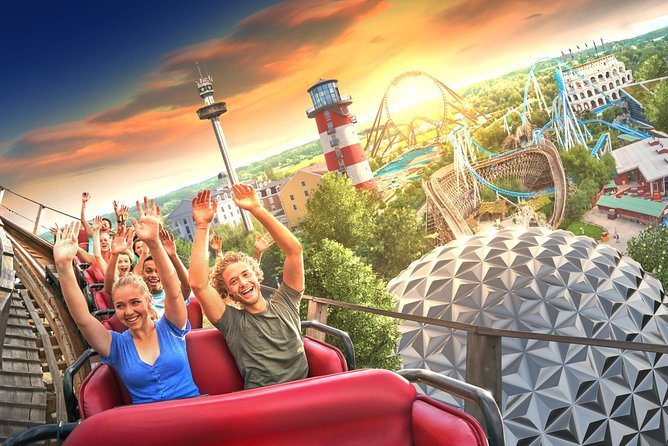
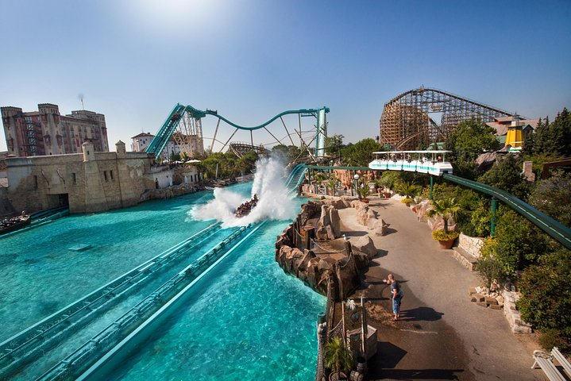
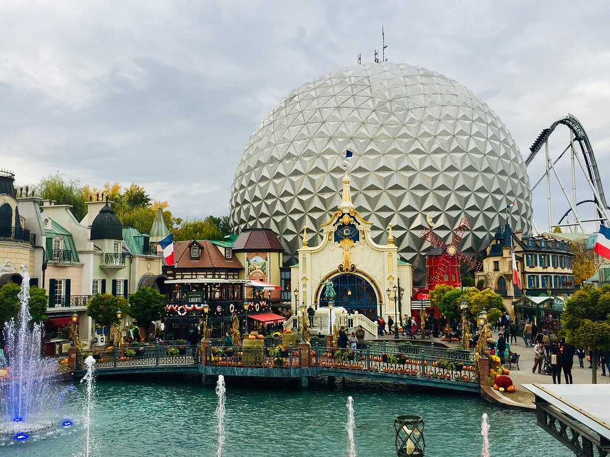

Itinerario del Día
El séptimo día comienza con la salida desde Colmar hacia Europa-Park, uno de los parques temáticos más grandes y populares de Europa. Después de disfrutar de un día lleno de emociones, regresarás a Colmar para descansar.
Ruta y tiempo de viaje
La ruta incluye:
- Colmar a Europa-Park: 50 km (~45 minutos).
- Europa-Park a Colmar: 50 km (~45 minutos).
- Distancia total: 100 km (~1 hora y 30 minutos).
Plan para el Día
Europa-Park abre de 9:00 a al menos las 18:00 durante la temporada de verano. Aquí tienes una sugerencia para aprovechar tu visita:
- Llega temprano para evitar colas en las atracciones más populares.
- Prioriza las montañas rusas principales como Silver Star, Blue Fire y Wodan.
- Explora las áreas temáticas como Alemania, Francia e Islandia.
- Disfruta de espectáculos como El espectáculo de patinaje sobre hielo.

Vista de Europa-Park, uno de los parques temáticos más populares de Europa.

Una de las emocionantes montañas rusas en Europa-Park.

Otra atracción destacada en Europa-Park.
Mapa de la Ruta
Costes en Europa-Park
A continuación, se detallan los costes aproximados para tu visita:
- Entradas:
- Adultos: Temporada baja: €61 | Temporada alta: €69
- Niños (hasta 11 años) y mayores de 60 años: Temporada baja: €52 | Temporada alta: €59
- Extras:
- Aparcamiento: €8 por día
- Comida en el parque: Entre €10 y €20 por plato en los restaurantes temáticos
Gastos
En esta ruta, los gastos aproximados son los siguientes:
- Peajes: 5 € (estimado para la ruta).
- Gasolina: 14 € (estimado para 100 km con un consumo de 7 l/100 km y precio de 1.40 €/l).
- Entradas: 69 € por adulto (temporada alta).
- Aparcamiento: 8 €.
- Comida: 50 € (estimado para dos adultos y un niño).
- Total estimado: 146 €.